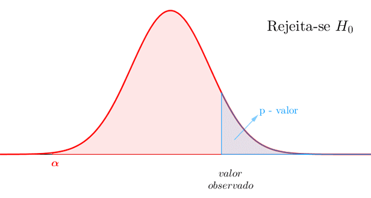

A estatística inferencial é o ramo da estatística responsável por permitir a inferência de conclusões sobre uma população com base na análise de uma amostra representativa. A inferência ocorre a partir do teste de hipoteses, que evidencia a diferença entre os fatores comparados. Amparado pelo valor de P, probabilidade da hipótese nula obter um resultado tão extremo quanto o observado. Além dos testes, a estatística inferencial inclui métodos de estimativa de parâmetros e intervalos de confiança, e fornece compreensão sobre sobre o efeito de preditores e gerar predições. Podemos classificar os teste entre paramétricos e não paramétricos baseados nas suposições sobre os dados que são requeridas para que sejam aplicados. Os paramétricos requerem que a distruição dos dados siga um padrão conhecido, enquanto os não paramétricos não requerem uma distribuição específica.
Para aprendermos sobre estatítica inferencial paramétrica, vamos utilizar o conjunto de dados que contém o tamanho de colônias de fungos de diferentes espécies. Buscaremos identificar se há diferença entre as espécies, utilizando o teste T, Anova e teste de PosHoc
Método estatístico paramétrico que visa identificar se há diferença significativa entre três ou mais grupos independentes, por comparação da variância. Possibilitando distinguir se a variação (Soma do quadrado dos resíduos), é explicada por aleatoriedade (Soma do quadrado dos resíduos em relação a média dos grupos) ou por características distinta dos grupos (Soma do quadrado dos resíduos em relação a média total).
Soma do quadrado dos resíduos:
Resíduos são a diferença entre o valor observado e uma média. Seja em relação a média total ou dentro de um grupo
\[
e_i \;=\; y_i \;-\; \hat y_i
\]
\[
\begin{align*}e_i &\quad \text{é o resíduo da i-ésima observação (erro de predição)} \\y_i &\quad \text{é o valor observado da i-ésima observação} \\\hat{y}_i &\quad \text{é o valor previsto pelo modelo para a i-ésima observação}\end{align*}
\]
Elevando o resíduo ao quadrado almejamos a evidenciar grandes discrepâncias, a garantir que a soma total será uma mensuração de variabilidade absoluta e permite maior conveniência matemática. Uma vez que será uma função convexa conhecida dos parâmetros do modelo.
Portanto podemos compreender a soma do quadrado dos resíduo como uma mensuração do quanto da variabilidade não é explicada pelo modelo.
\[
\begin{align*}SQR_{\mathrm{res}} &\quad \text{é a Soma dos Quadrados dos Resíduos} \\\sum_{i=1}^n &\quad \text{indica a soma para todas as observações de i = 1 até n} \\e_i &\quad \text{é o resíduo da i-ésima observação (} e_i = y_i - \hat{y}_i \text{)} \\y_i &\quad \text{é o valor observado da i-ésima observação} \\\hat{y}_i &\quad \text{é o valor previsto pelo modelo para a i-ésima observação} \\n &\quad \text{é o número total de observações}\end{align*}
\]
Obtemos o valor de F através da razão entre a diferença entre as somas dos quadrados dos resíduos (SQR) divido pela diferença entre número de parâmetros dos modelos (P), e a SQR(grupo) dividido pela diferença entre o número de amostras pelo número de parâmetros do modelos da média total. F demostra a relação entre variabilidade entre os grupos e a aleatoriedade, dado a varibilidade interna de cada grupo. Portanto quando a variância explicada é maior que a variância não explicada F > 1 ao menos um possui diferença significativa.
\[
F = \frac{\text{Variância explicada}}{\text{Variância não explicada}} =
\frac{
\displaystyle \frac{SS(\text{mean}) - SS(\text{fit})}{P(\text{fit}) - P(\text{mean})}
}{
\displaystyle \frac{SS(\text{fit})}{n - P(\text{fit})}
}
\]O P-valor indicada a probabilidade de observar essa variabilidade ou outra ainda mais extrema, no caso de hipótese nula (H0: sem diferença entre grupos). Portanto ao obtermos um pequeno P-valor temos uma probabilidade baixa o suficiente para recursarmos H0 e adotarmos a hipótese alternativa (H1: há ao menos um grupo com diferença significativa), interpretando o como o fenômeno que ocorreu é improvável de ocorrer sob a condições de H0. O p-valor é obtido pela área abaixo da curva de distribuição de F, na qual temos a densidade de probabilidade em função dos valores de F, integrando os valores mais extremos que o F encontrado.

Checagem das premissas
Antes da aplicação de testes inferenciais, é essencial verificar se os dados atendem às suposições exigidas pelos modelos estatísticos. No caso da Anova as principais suposições são:
Normalidade dos resíduos, avaliada por meio de testes como o Shapiro-Wilk e por inspeção visual de histogramas;
Homogeneidade de variâncias entre os grupos, verificada por testes como F de Fisher (para duas amostras) ou Bartlett (para múltiplos grupos);
Independência das observações, que garante que os valores analisados não estejam correlacionados entre si.
A validação dessas suposições assegura a confiabilidade dos resultados e evita conclusões equivocadas.
Normalidade
Como passos iniciais da análise, vamos ajustar um modelo de análise da variância com a função aov(). Com o objetivo de avaliar se há diferença significativa entre o valor da variável ‘tcm’ de cada ‘espécie’.
Para validar o uso do modelo, vamos verificar se os resíduos (diferenças entre as observações e os preditos) seguem a distribuição normal. A verificação pode ser feita de maneira visual, através do histograma dos resíduos. Ou de forma mais analítica como o teste de shapiro-wilk, que considera como hipotese nula que o comportamento difere da normalidade. Sendo assim necessário obter um P-valor maior do que Alfa (0.05) para confirmar a normalidade.
# Teste de normalidade dos resíduos do modeloAnovaModel <-aov(tcm ~ especie, data = MiceliaDataframe)hist(residuals(AnovaModel), main ="Histograma dos Resíduos",xlab='Resíduos', ylab ='Frequência')
shapiro.test(residuals(AnovaModel))
Shapiro-Wilk normality test
data: residuals(AnovaModel)
W = 0.9821, p-value = 0.8782
Homocedasticidade
Outra suposição necessária para validar a aplicação do teste de Anova, é a homogenidade das variâncias. Uma teste comum que permite essa averiguação é o teste de bartlett, em que a hipótese nula assume que as variâncias dos tratamentos são iguais. Caso p-valor seja maior que alfa (0.05), confirmamos a homocedasticidade.
# Teste de homogeneidade de variânciabartlett.test(tcm ~ especie, data = MiceliaDataframe)
Bartlett test of homogeneity of variances
data: tcm by especie
Bartlett's K-squared = 4.4367, df = 4, p-value = 0.3501
Tabela Anova
A tabela de análise Anova, permite a avaliação dos resultados e performance do teste. Através dela podemos observar o grau de liberdade, soma e média dos quadrados dos resíduos, valor de F e P.
summary(AnovaModel)
Df Sum Sq Mean Sq F value Pr(>F)
especie 4 1.4696 0.3674 19.63 2.03e-07 ***
Residuals 25 0.4679 0.0187
---
Signif. codes: 0 '***' 0.001 '**' 0.01 '*' 0.05 '.' 0.1 ' ' 1
Post-hoc
Após análise de variância, e a detecção de que há diferenças significativas, seguimos investigando para identificar quas grupos são diferentes entre si. Para isso sçao comumente aplicados testes de Post-hoc, realizam a comparação todas as combinações possíveis entre os grupos enquanto se controla a chance de ocorrer falsos positivos ao ajustar o nível de significância.
Como exemplo vamos utilizar EMMs (média marginal estimada) que utiliza médias ajustadas, corrigindo desequilíbrios no número de observações e efeito de covariáveis. *
Para facilitar a visualização, vamos organizar os grupo identificando-os como letras (a,b,c)
# Comparação de médias com EMMeansem <-emmeans(AnovaModel, ~ especie)cld(em, Letters = letters)
especie emmean SE df lower.CL upper.CL .group
Fgra 0.912 0.0559 25 0.797 1.03 a
Faus 1.237 0.0559 25 1.122 1.35 b
Fcor 1.322 0.0559 25 1.207 1.44 b
Fmer 1.427 0.0559 25 1.312 1.54 bc
Fasi 1.572 0.0559 25 1.457 1.69 c
Confidence level used: 0.95
P value adjustment: tukey method for comparing a family of 5 estimates
significance level used: alpha = 0.05
NOTE: If two or more means share the same grouping symbol,
then we cannot show them to be different.
But we also did not show them to be the same.
Tranformação dos dados
Caso o conjunto de valores não siga a normalidade, uma alternativa é transformar os dados. Ajustando sua distribuição a normalidade. Utilizando o mesmo conjunto de dados iremos utilizar a raiz quadrada como forma de ajuste. A raiz quadrada permite a “compressão” dos valores de maneira proporcional a grandeza do valor, ajustando a simetria da distribuição. A analisarmos a distribuição dos resíduos novamente, podemos observar que foi averguado que os resíduos agora seguem a normalidade e homocedasticidade.
Shapiro-Wilk normality test
data: residuals(InsectLM)
W = 0.98721, p-value = 0.6814
Means =emmeans(InsectLM, ~ spray)cld(Means)
spray emmean SE df lower.CL upper.CL .group
C 1.24 0.181 66 0.883 1.61 1
E 1.81 0.181 66 1.447 2.17 12
D 2.16 0.181 66 1.802 2.53 2
A 3.76 0.181 66 3.399 4.12 3
B 3.88 0.181 66 3.514 4.24 3
F 4.02 0.181 66 3.656 4.38 3
Results are given on the sqrt (not the response) scale.
Confidence level used: 0.95
Note: contrasts are still on the sqrt scale. Consider using
regrid() if you want contrasts of back-transformed estimates.
P value adjustment: tukey method for comparing a family of 6 estimates
significance level used: alpha = 0.05
NOTE: If two or more means share the same grouping symbol,
then we cannot show them to be different.
But we also did not show them to be the same.
Two-way Anova
A Anova fatorial de dois fatores (Two‑Way ANOVA) estende a ideia da análise de variância unidirecional para investigar simultaneamente o efeito de duas variáveis categóricas sobre uma variável resposta contínua, bem como a existência de interação entre elas. Enquanto na Anova simples comparamos apenas médias de um fator, na Anova fatorial avaliamos:
Efeito principal de cada fator — se diferentes níveis levam, isoladamente, a diferenças significativas.
Interação entre fatores — se o impacto de um fator depende do nível do outro.
No exemplo abaixo iremos utilizar um conjunto de dados para investigar o efeito e diferentes doses de fungicidas diferentes sob a severidade. Ajustando um modelo linear com interação entre os fatores dose e tratamento, podemos observar que os resíduos atendem as pressuposições, e observar a tabela de análise de variâncai indicando que houve diferença significativa entre os grupos da variável ‘treat’, ‘dose’ e da interação entre as duas.
dose = 0.5:
treat emmean SE df lower.CL upper.CL .group
Tebuconazole 0.0210 0.0273 16 -0.03690 0.0789 a
Ionic liquid 0.2921 0.0273 16 0.23420 0.3500 b
dose = 2.0:
treat emmean SE df lower.CL upper.CL .group
Tebuconazole 0.0202 0.0273 16 -0.03768 0.0781 a
Ionic liquid 0.0501 0.0273 16 -0.00781 0.1080 a
Confidence level used: 0.95
significance level used: alpha = 0.05
NOTE: If two or more means share the same grouping symbol,
then we cannot show them to be different.
But we also did not show them to be the same.
treat = Ionic liquid:
dose emmean SE df lower.CL upper.CL .group
2.0 0.0501 0.0273 16 -0.00781 0.1080 a
0.5 0.2921 0.0273 16 0.23420 0.3500 b
treat = Tebuconazole:
dose emmean SE df lower.CL upper.CL .group
2.0 0.0202 0.0273 16 -0.03768 0.0781 a
0.5 0.0210 0.0273 16 -0.03690 0.0789 a
Confidence level used: 0.95
significance level used: alpha = 0.05
NOTE: If two or more means share the same grouping symbol,
then we cannot show them to be different.
But we also did not show them to be the same.
Teste T
Ou método comum para identificar se há diferença significativa entre médias é o teste T de Student. No teste T um valor de T é obtido e comparado a um valor tabelo em função do número de graus de liberdade. Caso o T valor seja maior que o valor crítico tabelado, a hipótese nula é rejeita (H0: Não há diferença significativa), adotando a hipótese alternativa de que há diferença significativa (H1).
Independente
Sua forma independente requer amostras que não exersem influência entre si, ou seja não há relação entre os valores. O valor de T é obtido através da razão entre a difereça das médias pelo erro padrão agrupado.
\[
\begin{align*}t &= \frac{\bar{X}_1 - \bar{X}_2}{\sqrt{\frac{s_1^2}{n_1} + \frac{s_2^2}{n_2}}} \\\\\ \\\bar{X}_1 &\quad \text{é a média da amostra do grupo 1} \\\bar{X}_2 &\quad \text{é a média da amostra do grupo 2} \\s_1^2 &\quad \text{é a variância da amostra do grupo 1} \\s_2^2 &\quad \text{é a variância da amostra do grupo 2} \\n_1 &\quad \text{é o tamanho da amostra do grupo 1} \\n_2 &\quad \text{é o tamanho da amostra do grupo 2} \\t &\quad \text{é o valor do teste t calculado}\end{align*}
\]
Como exemplo vamos utilizar um conjunto de dados com observaçõs de comprimento com e sem o uso de Mg2. Inicalmente vamos verificar a normalidade de homogenidade das variâncias, averiguando que os dados seguem a distribuição normal e os grupos possuem variância homogenea.
F test to compare two variances
data: MgDataframeWide$control and MgDataframeWide$Mg2
F = 0.67654, num df = 9, denom df = 9, p-value = 0.5698
alternative hypothesis: true ratio of variances is not equal to 1
95 percent confidence interval:
0.1680428 2.7237436
sample estimates:
ratio of variances
0.6765394
Em seguida vamos performar o test t independent para verificar se houve diferença significativa entre os grupos. Constatando que há diferença entre os grupos.
Amostras pareadas envolvem observações relacionadas em pares, onde cada elemento de um grupo está diretamente vinculado a um elemento do outro grupo.
Seu valor de T é obtido pela equação abaixo:
\[
\begin{align*}t &= \frac{\bar{d}}{s_d / \sqrt{n}} \\\bar{d} &\quad \text{é a média das diferenças entre os pares de observações} \\s_d &\quad \text{é o desvio padrão das diferenças} \\n &\quad \text{é o número de pares de observações} \\t &\quad \text{é o valor do teste t calculado}\end{align*}
\]
Para ilustrar o teste T pareado vamos utilizar um conjunto de dados em que diferentes avaliadores realizaram classificações com e sem o auxílio de escala. É preciso somente verificar se a diferença entre as observações pareadas seguem a normalidade e o teste pode ser executado. Conforme podemos observar que houve diferença significativa